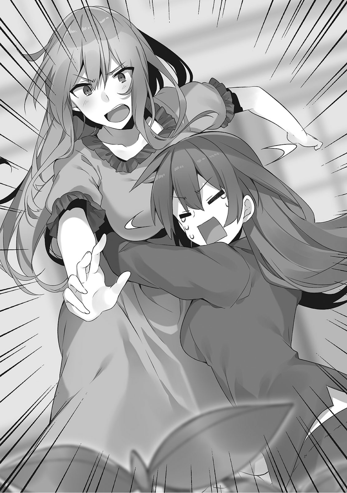
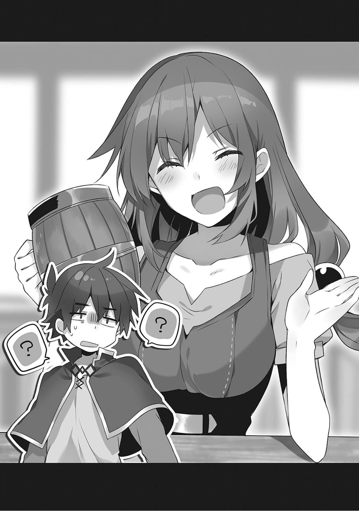

1
那一天从早上就在下雨。
但是阿库娅不在乎天气，满脸喜悦地在院子里忙活农事。
旁边给她打伞的惠惠好像在指导阿库娅。
「我说啊，和真，你也劝劝她们。农活可不是那么简单的。每年种植松茸和竹笋的农家都吃了不少苦的」
达克尼斯望着窗外的两人苦恼地说。
「我也知道农家很辛苦啊。我的国家也有台风，偶尔会有人因此失踪的。不过她们就是不听劝，我也很无奈啊」
「你的国家也是吗。毕竟到了台风天蔬菜会都变得异常兴奋啊……」
我心想着的是会有农民会因为担心台风糟蹋水渠和农田而出门，结果被台风卷走。但看来我和达克尼斯的常识不在同一层面上。
「和真，快来看！田里已经冒出芽了！」
或许因为她是水之女神，阿库娅就算被雨淋也情绪高涨。
「秋刀鱼的眼睛也长出来了。虽然有点猎奇，趁现在来看看吧」
连惠惠都说了这种话……
「我说啊，达克尼斯，在海里种西瓜在田里种秋刀鱼，不觉得有点诡异吗」
「为啥觉得诡异？你偶尔会说些脱线的话啊」
就在我久违地遭遇与异世界人的文化鸿沟时，有人敲了大门。
我去接待客人时，却看见一件慌慌张张拍动翅膀的布偶装。
我还没来得及思考他是怎么知道这里以及来干什么，农活中的阿库娅就发现了布偶装。
「啊！」
「吱！？」
听见阿库娅的喊声，布偶装发出了鸟叫般的怪声。
「我说过要是在外面看见你就会净化你的，好大的胆子啊！正好那个奇葩恶魔也不在，我就在这里超度你吧！」
「等一下！我来这里是有理由的！其实巴尼尔大人和店主阁下……」
——我们在雨中来到了魔道具店。
「维斯，你回来啦！大家都很担心你——」
「巴尼尔先生这个笨蛋！从以前开始就一点不懂怎样体贴人！」
「这个丑八怪店主居然跟恶魔谈体贴人心！到处乱晃之后一回来就在撒狗粮，要嫁人马上嫁掉不就好了！」
一开门看见两人在大吵特吵，我们都愣住了。
「真的好吗！？我真的要嫁人了哦！？入籍之后就得离开这家店了哦！？店主要换人了！对恶魔来说契约不是绝对的吗？之前和我订下的一起做大这家店的契约就无所谓了吗！」
应该是从雨中回来的，全身湿透的维斯眼含泪水反驳。
与她对峙的巴尼尔，那精细构筑的躯体的额角上也绷起了青筋。
「等剩女店主嫁人，新店主就任之后，吾辈会和新店主把店做大，然后筹出地城的建造费用的！所以你这个晒男人的店主就安心嫁人吧！」
「噫——！」
我看着含着泪水去揪巴尼尔衣服的维斯，问旁边的布偶装。
「这是搞啥」
「巴尼尔大人和店主阁下刚才就一直这样子。店主阁下终于回来后，问她怎么了她总是心不在焉，然后巴尼尔大人就火了。我劝不住两位，只能找少年求助了」
虽然我想说别因为这种事找我，不过维斯回来了就好。
阿库娅一脸严肃地冲进开始动手的两人之间。
「等下，维斯，你到哪里闲逛了！大家都很担心你，给我好好道歉！」
「阿库娅，他们现在看来很忙，你这样会搞得更复杂的，先和我一起待到角落里」
惠惠将不会看气氛的阿库娅拖到了店的角落里。
达克尼斯趁机问起情况。
「你们俩究竟是为什么开始吵架的？赛利希尔特伯爵看来也很头疼」
维斯哭着抱住了达克尼斯。
「听我说啊，达克尼斯！其实这几天我一直窝在号称世界最尽头的最深的地城里，一边刷怪一边烦恼着」
就在我对这武斗派的窝法有点不能理解的时候，维斯又从店里花瓶抽出一枝花，忸怩地开始拨弄起来。
「那位男人……突然出现，说要接受我的一切的杜克先生……为什么会那么热情地追求我呢……」
噢，这就是所谓的撒狗粮？
巴尼尔显得很扫兴，维斯却没留意般说下去。
「我可是巫妖啊？但他却说『我不在乎这些，即使你变成不死族还是那么美，我就喜欢现在的你』什么的……」
「我利用读唇术技能在远处看过了，他说过这种台词吗」
维斯没有理会我的吐槽，继续拨弄着花。
「而且刚见面就突然说要成家……还说『你那么可爱，不适合危险的工作，今后我要保护你』……」
「没说过吧」
杜克应该没说到这份上。
「和真先生，我现在说的话很重要，请不要插话……这次求婚出乎意料，但我还有和巴尼尔先生的约定，还有这家店在。我究竟该怎么办……」
维斯偷偷瞟了瞟旁边，视线对面的巴尼尔郁闷地咧咧嘴。
「回来店里之后，她就一直是这副样子。我就说如果想继续做店主，就补上离家出走的份快点干活，如果想嫁人就随你喜欢，然后她就发飙了……」
「就不能再体贴一点吗！我和巴尼尔先生的关系就只有这点程度吗！？我们是为了实现彼此的愿望而成为伙伴的吧！」
巴尼尔听见伙伴这说法，露出一副非常嫌弃的表情。
「对恶魔来说契约是绝对的……但连吾辈最近都对你的废柴程度有点心力交瘁了……现在也是每日每夜绞尽脑汁，想办法把和你的契约一笔勾销……」
「我才不会让你放弃契约的！就算我也明白如果巴尼尔先生不在，这店早就倒了。不，不过你看，世界最大的地城，也肯定只有我才做得出来吧？巴尼尔先生你真要放弃在固若金汤的最强地城的最深处迎战冒险者的梦想吗！」
维斯一边缠着巴尼尔，一边拼命说服他。
阿库娅插话说。
「那么维斯要和那人交往吗？还是说不是喜欢的类型？」
维斯听见后，一边不时瞟着巴尼尔的反应，一边玩着手中的花。
「那位看上去还不错，而且也相当专一……但你看，我还有实现巴尼尔先生的梦想的义务嘛」
「对吾辈而言，店主是不是你都不要紧，只要存到钱再建地城就行了」
「巴尼尔先生是傲娇吗！？娇的部分也太少了吧，再多挽留我一下嘛！我们都相处这么久了，我就这样跟那位在一起远走他方，你也没有什么想法吗！」
她一气之下发动了生命吸收，手上的花眼看着渐渐枯萎了。
「就算跟没有性别的吾辈谈傲娇，吾辈也很难办啊……懂了懂了，这次就多花点力气去看穿他的。如果他人品太差就赶他回去，这样满意了吧？」
我看着不耐烦的巴尼尔，突然发觉现在的情况对杜克来说更好。
对，之前认为杜克想取得店的经营权的话，要跨过的最大难关就是巴尼尔的『不愿意』了，但巴尼尔似乎并不介意更换店主。
这种冷淡的思考方式确实很有恶魔的风格。但这样一来最大的障碍就没了。
……不，先等等，如果他用能力看透了杜克，搞不好还会挑刺。
我正犹豫要不要阻止巴尼尔时，他眼中闪过诡异的光……
「呵呵……看见了，看见了。倾慕你的那位男人，正在城里搜集你的情报」
维斯听见后喜不自胜地微微翘起了嘴角。
「……唔？这，这竟然……！真棒，真是棒！就说怎么这么难看穿，原来是这么一回事吗！」
「怎、怎么了巴尼尔先生，究竟棒在哪里？而且巴尼尔先生很少这样夸人吧！？」
维斯对巴尼尔的突然转变感到惊讶时，自称能看穿一切的大恶魔兴奋地说。
「看穿一切的恶魔在此宣言！你在回应那位男人的希望之时，能享受前所未有的欢喜与幸福之人便会诞生！」
2
从魔道具店的回来路上。
「不过，那个巴尼尔竟然这么干脆地认同了。不愧是我看中的男子汉」
我回想起刚才的情景，不由喃喃自语。
「这个男人怎么这么帮那个跟踪狂说话啊……不过，我也觉得跟某个一转身就跟其他女冒险者玩在一起，在浴室被紧逼一下就找借口顺水推舟的家伙不同，专情方面是挺值得认可的……」
惠惠看着我说了富有深意的话。
「对，跟某人不同，很珍惜要一起过活的对象。不，不过嘛，沾花惹草的男人也是人渣的典范，我并不讨厌就是了……」
达克尼斯也看着我……
「什么嘛，浴室那时是我不对啦！不过让我辩解一下，你们也有错哦！惠惠一直各种暗示又不越雷池半步，达克尼斯明明一副让人射爆的身材，诱惑人又不够彻底，又没胆量……」
「这家伙已经连脸都不要了！」
「最近你真是越来越接近我曾经喜欢的理想类型了……」
我被两人骂着的时候，在队伍最后晃晃悠悠的阿库娅突然冒出一句。
「我不认同」
我听了回头一看——
「我绝不认同那种来路不明的货色！这很奇怪吧，对方可是维斯哦？为什么会倾心到那种程度？肯定是有什么邪恶的想法！这是，女神的直觉！那个男人并不是真心喜欢维斯的！」
我听完阿库娅突如其来的固执坚持——
「你只是不想失去唯一的茶友吧」
「是没错！但是总觉得有点不好的预感！我没法好好表达出来，但我感觉这事的结局会让我最讨厌的家伙高兴地不得了……」
原来如此，我听不懂。
「但是，维斯现在也有点接受的意思了，我们再阻止也太不解风情。希望她得到幸福的话，现在就应该顺其自然……」
惠惠的话使阿库娅不情愿地沉默了。
——在巴尼尔给杜克打包票之后。
维斯在烦恼之后，说要积极应对这件事就回去工作了。
之后就是当事人之间的问题了，我们这些外人不该插嘴。
说是这样说……
「……我要测试那个男人」
阿库娅的眼神蕴含着内心坚定的决意。
「怎么试？你打算干什么」
我不由问道，阿库娅充满自信地回答。
「我要测试那个男人是不是真正的专情认真的男子汉。对，我要勾引他。去勾引他」
……哈？
「你，你认真的？连恋爱的恋字都不会写的你，竟然要撩那个男人，你是认真的？」
不如说，别说那个男子汉，正常人都不会中招吧。
「你当我是谁？我可是在全国拥有一千万阿库西斯信徒，人气很高的阿库娅大人哦？附近的小孩都喜欢我，最近还在老爷爷那里领到点心呢。只要我稍微指导一下这两人，那家伙就只有等着被秒杀的份了」
这种谜一般的自信是哪来的。
……等一下，指导这两人？
阿库娅不理会我的疑问，更加充满自信地说。
「毕竟我们拥有，对萝莉控能发挥出致命威力的萝莉杀手，还有对喜欢魅惑肉体的人能发动暴击的射爆尼斯小姐哦？如果他面对两人的诱惑还能坐怀不乱，我就认同他！」
「等一下，萝莉杀手是指我吗！？这种蠢事我可不干！你说要测试那个男人的专情，我也是专情有原则的女人，我都有和真了，才不去搭讪啦！」
「不要再把我形容得像是色情专业户一样了！我觉得我的待遇实在越来越差了！而且对觉得这样的待遇也还不赖的自己感到有点气愤……」
阿库娅无视两人的抗议。
「就由我将智慧传授给毫无恋爱经验的两位。你们放心吧！看我的，我会证明我没有说错！」
「我才不干哦？我绝对不干！阿库娅，你在听吗！？」
惠惠一边摇晃着阿库娅，一边对我说。
3
远离闹市区的一个小酒馆里，出现了一位不搭调的美女。
可以用妖艳来形容的美女，身穿与这低档酒馆格格不入的高级礼服，靠近一个默默喝着闷酒的斗篷男。
「我可以坐你旁边吗？」
「……要是那种拉客的话就免了」
努力挤出的谄媚笑容就这样凝固了。
……对，跟斗篷男——杜克搭话的，是接受了阿库娅指派来的达克尼斯。
（喂，阿库娅，她都那么卖力打扮了，却被人说是拉客的……噗）
（等一下，和真你这不行，别笑啊。我们会被发现的……嘻嘻）
大概是听见了我们的声音，达克尼斯脸越来越红。
这里是我以前遇到杜克的酒馆。
我和阿库娅跟那两人拉开距离，用潜伏技能混在客人之中，万一达克尼斯搭讪顺利就去救她出来。
虽然首先由达克尼斯担任第一位刺客……
（之前我跟她说不可能时，她还那么生气，还说什么贵族都学过笼络男人的技术嘻嘻）
（不过没办法，这是为了维斯。直到她说要发挥贵族大小姐的气场时还是挺帅的！）
达克尼斯一开始还是拒绝的。
她还说出『你看我搭讪其他男人就不会有什么想法吗』之类的麻烦话，不过我说到『想尝试被绿的感觉』时，她突然产生出强烈的共鸣，变成要积极协助阿库娅了。
我的说法对变态来说似乎是很值得认可的答案。
顺便一提，惠惠在阿库娅尝试说服之前就不知道跑哪里去了。
就在我和阿库娅在远离杜克的角落窃窃私语时，达克尼斯回想起本来的目的，绷紧了神情。
然后露出柔和的笑容继续说，
「真是会开玩笑。我并不是拉客的。只是在这里经营一家小店的女店主，名叫拉拉蒂娜……」
「咦，这不是达克尼斯嘛！喂，穿礼服来这种地方干什么啊。这里可不是贵族光顾的店哦？达斯提尼斯家的大小姐，既然难得在这里碰面，就请我喝一杯吧！」
经常来这家店的金发小混混突然就缠上她了。
说起来上次他也在这家店里。
「……才不要，你是不是认错人了？」
「说什么啊拉拉蒂娜，是我啊，达斯特啊！我们不是一起组队冒险，还干过其他很多事么！别说你忘了！」
达克尼斯转身背对紧盯着两人对话的杜克，偷偷给这个烦人的小混混塞了钱。
被她赶走的达斯特，虽然有点不满，但还是握着那点钱离开了。
达克尼斯再次露出圆场的笑容。
「……到哪儿都会碰见这种坚称以前在哪见过我的人呢」
「那么达斯提尼斯家的大小姐究竟找我有何贵干？」
这下完了，已经将军了。
我和阿库娅从只有达克尼斯能看见的角度，打出了放弃吧快回来的手势。
但是达克尼斯看见后，咬了咬嘴唇。
「看来我玩笑开过头了。我重新自我介绍一下。我名叫达斯提尼斯·福特·拉拉蒂娜。是治理这个城镇的领主的女儿，也在当冒险者」
看来是打算暴露贵族大小姐的身份然后继续出击。
达克尼斯坐在杜克的邻座，对店主优雅一笑。
「请给这位先生与我，各来一份贵店最高级的红酒」
「我这种低档小酒馆可没有红酒哦，达斯蒂尼斯大人」
（喂和真，不能笑啊！达克尼斯是大小姐自然不适应这种店啦！这是没办法的！）
（那么你为什么又在忍着笑啊，别这样，我也会忍不住的！）
不光是我们，周围的其他客人都在忍着笑。达克尼斯连耳根都红透了。
「那么，来份这店里最贵的……」
「凉透心的红啤一桶对吧，谢谢惠顾！」
听了达克尼斯的下单，店主利索地搬出了酒桶和啤酒杯。
这货已经不行了，越玩越脱。
「……真厉害，你这么能喝吗」
「…………为庆祝与你的相遇，我打算请这里的所有人喝酒……」
达克尼斯缩起身子发出蚊子般的声音。
——我们看完有趣的场面满足之后，跟早早逃离逐渐化为宴会场地的酒馆的达克尼斯一起，踏上了夜晚的归途。
「我绝对不会再试了！杜克这家伙，竟然让我这位贵族大小姐蒙羞！」
达克尼斯脱下纯白的手套，气愤地紧紧握住。
「是你自己自爆的吧，杜克什么都没干哦……噗！」
「喂和真，难得达克尼斯盛装打扮都没引起对方兴趣，你还笑她不是太可怜了吗！达克尼斯，我觉得你表现得很好！特别是那句，为庆祝与你的相遇……然后顺势开宴会的那部分！要是有人这样跟我说，我一定会来一发特别厉害的宴会特技的！」
「啊啊啊啊啊啊！」
达克尼斯终于双手捂脸惨叫起来，然后抬起满是泪水的脸。
「不过那个男人，竟然对我的诱惑和贵族的名衔都不为所动……我果然没看错。跟经不起诱惑的某人大不相同。我有必要进一步改变认识……」
达克尼斯语气沉重地说着时，阿库娅也换回了严肃的表情——
「和真，你看见贵族大小姐的气场了吗？」
「很遗憾我没看见。那似乎就是贵族学到的笼络男人的技术，你学到了吗？」
我也换上严肃的表情回应，达克尼斯便把手套甩到我身上。
「我要劈了你！」
达克尼斯终于发飙了，我在逃跑路上批判阿库娅。
「笨蛋，你调戏过头了！她真的发飙了！」
「哇啊啊啊啊，是你最后那句话激怒达克尼斯的，你快想想办法啦！」
「我气的当然不是其中一个，而是你们两个！再跑你们只会更惨！回大宅之前我要好好教训你们！」
4
第二天早晨。
我一大早回到家时，正好碰到在田里劳作的阿库娅。
「真亏你敢大摇大摆地回来啊，你这个跑路NEET。我被达克尼斯抓住，太阳穴被钻了好久的毒龙钻」
由于达克尼斯发飙时太恐怖，我发动逃走技能跑掉后干脆在外面住了一晚。
「别管我了，这里好像长出了什么奇怪的东西？」
「你这是打算岔开话题？你要好好感谢我献身镇住达克尼斯的怒气啊」
我无视阿库娅的抱怨，坐在院子里。
田里长着一个手办大小但五体俱全的女孩子。
「喂喂，这真的长出了曼德拉草吧。要是在这城镇里发出惨叫可是会出大事的。曼德拉草不是说明年才种吗？」
「因为种子很便宜就买来种了，但是不可能长得这么快啊。那这究竟是什么？感觉长相好像哪里见过。植物型怪物的话倒是会长得比较快……」
阿库娅这句话使我顿悟。
「喂你这个不是安乐少女吗！为什么会长出这种东西！」
「等，等一下！我只是种下了旅行商人的大叔给我的种子啊！？种子售价也非常便宜，这么亲切的大叔怎么可能卖给我怪物的种子！」
这个笨蛋！
「就因为是怪物的种子才低价出售吧，你之前被骗说是龙蛋而买来一只小鸡还不够，这次还要种一些派不上用场的怪物吗！」
「我说过泽尔帝不是小鸡了！话该怎么处理这孩子？要是开始种怪物，就算是达克尼斯也会生气的！」
看来是我们吵闹过头了。
「……早上好啊和真，真亏你敢大摇大摆地回来啊！」
我循声望去，发现我回来的达克尼斯正在穿凉鞋准备到院子来。
「和真，达克尼斯要过来了！快给这孩子想想办法！」
「就算安乐少女被杀掉我也无所谓啊……」
阿库娅砰砰地敲打着见死不救，准备逃跑的我——
「恶鬼！你果然还是恶鬼NEET！对这刚诞生的小生命就不会有什么想法吗！？」
「把你的同情心分一点给不死族和恶魔吧！可恶，她过来了！」
我和阿库娅挡住靠近这边的达克尼斯的视线，挡在安乐少女的前面。
「对不起，达克尼斯，是我错了！昨天我戏弄你过头了！我在此道歉，请原谅我！」
「对啊达克尼斯，昨天的事就算了吧？我会去做一顿美味的早饭的，我们快点回家吧！」
达克尼斯露出了诧异的表情。
且不说在连连道歉的我，她应该觉得阿库娅的态度很不自然吧。
那也是当然的，如果是平常的阿库娅，肯定会很积极地落井下石。
果然达克尼斯向我投来了不信任的眼神。
「……这次又捅了什么篓子？」
「喂，为什么看我！我先说明，我捅娄子的次数用手指头还是数得出来的！」
达克尼斯听见后把视线移向我身旁，阿库娅立刻别开了脸。
以前我就觉得，这家伙隐瞒事情的水平也太差了。
「快说！这次又搞了啥！」
「为什么发生什么事大家都咬定我是犯人！？已经够了，别这样一上来就咬定是我的锅！」
阿库娅说着用力推着达克尼斯的胸膛让她离开。
「喂，你为什么那么刻意地想要我离开这里！」
被推开的达克尼斯为了阻止阿库娅而跟她扭在一起，突然视线投往了阿库娅背后……
「……喂」
「不是的」
尽管阿库娅张嘴否认，达克尼斯还是认真地说下去。
「阿库娅，你，那个不是，安乐少……」
「不是的，她只是长得有点快的可爱的曼德拉草而已！我买的种子绝对是曼德拉草的种子！」
虽然不知道曼德拉草和安乐少女哪种更危险，但达克尼斯紧绷着脸——

「你居然种了这种东西！话说，曼德拉草也并不比安乐少女好多少吧！阿库娅给我让开！我要趁她拥有自我之前解决掉它，这就是我最后的仁慈了！」
达克尼斯卷起袖子，走近要拔掉安乐少女。
这结局也毫不意外。
因为不能在城镇里种怪物，这种结局算是理所当然的。不过阿库娅也不是故意的，所以至少让它死个痛快……
「快住手，我已经给她起好名字了！因为我认为她是曼德拉草，已经给她起了死亡尖叫·血腥玛丽这么拉风的名字……」
「你给曼德拉草起这种名字是明知故犯吧，你这个大笨蛋！刚才还略微有点同情你的我实在是太蠢了，达克尼斯，快点拔掉吧！」
我正要对阿库娅的脑门使出毒龙钻时，
「早上好。你们今天也这么吵啊。这次又闯了什么祸？」
昨晚本该逃掉的惠惠，不知为何满身泥土地回来了。
5
洗完澡出来的惠惠，热乎乎地大口吃早饭。
「惠惠你究竟跑哪里去了？没想到你宁可通宵野外求生都不愿去搭讪那个男人。我又不会强迫你了。这样很危险，下次别这样了哦？」
「不是的，我哪有这么野孩子啊。虽然我确实是因为不想去勾引那个男人才离家的，但满身泥土回来另有理由」
惠惠长呼一口气后擦干净嘴角。似乎是吃饱后冷静下来了。
「什么理由？发现了高经验值的怪物追了一路，还是被小孩子取笑名字后追了一路？」
「你当我是谁！最近这附近已经没有小孩子取笑我的名字了。我已经逐家逐户教训过他们了」
「我，我说啊，惠惠，孩子的父母都来投诉了哦？每次都是我道歉的。你要好好记住了，别再这样做啊？」
我一边沏好饭后茶，一边催促惠惠说出原因。
「其实昨晚离家出走后，我无处可去，就想着找个认识的冒险者跟着混，在街上到处晃悠……」
惠惠在街上毫无目标地转来转去，但昨晚偏偏没有遇到关系好的熟人。
于是她就去了冒险者公会，想着那里总会有熟人吧……
「没想到悠悠正在努力招募人一起参加那个试炼，于是我就再次助她一臂之力了」
「结局我已经猜到了不用再说了」
即使我打断她的说明，惠惠还是双眼放光地说，
「先听我说啦，和真。我也是会吸取教训的。上次试炼时，第一关卡的解谜太麻烦了，我忍不住就释放了魔法。这次为了即使火大时也尽量不释放魔法，我事先将法杖交给了悠悠，努力只当她的跟班」
「喔」
这个只会抢着出风头的家伙也成长了嘛。
「不过姑且不说上次试炼失去资格的悠悠，破坏了试炼场地的我被禁止作为搭档参加。昨晚和悠悠商量后，我们决定趁没人注意的夜里接受试炼，先斩后奏」
还以为她真的成长了，原来是我的错觉。
惠惠还是说出了不对头的内容。
「我们穿过夜晚的森林，抵达赶工建成的新试炼场地，这次挑战认真解谜。不过队里好歹有红魔族第一天才的我，还有自称天才宿敌的悠悠在。解谜这种脑力试炼，应该是很轻松的」
「已经有一种不好的预感了」
应验了我的预想，惠惠别开了眼神。
「仔细回想一下，我们从学校毕业后，就没有再学习过了……不管挑战了多少次，试炼场地的魔道具都说不合格，我就抢过悠悠背上的法杖，还是将试炼场破坏了……这次是在晚上挑战的，听见声音的怪物都纷纷聚集过来……」
「……我先问一句，没被红魔乡的人发现吧？」
我忐忑地问道，惠惠一脸自豪地回答。
「不用慌。在我们逃离怪物期间，大家都听见爆裂魔法的声音赶来了，悠悠就使用传送魔法，我们就若无其事回到了红魔乡，还蹭了一顿晚饭！不过我太小看红魔族的魔法知识了，第二天早上不知为何就发现了我是犯人，然后让我赔偿魔道具……」
「对啊，你的爆裂魔法就是最大的证据啊！什么魔法知识啊，会使用那种魔法的红魔族光有你一个就够麻烦的了！」
我一边接过惠惠满脸歉意递来的赔偿账单，一边把账单上的金额递给她。
「对不起和真，下次我会努力争取不露馅的」
「努力的方向错了，本来就不该再做了！」
惠惠很享受地喝完我沏的茶后——
「你们这边又发生了什么事？」
她不解地问。
6
「这，这该怎么办啊」
「没怎么办，这方面你也是同罪。田是你和阿库娅一起种的吧」
看见长出来的安乐少女后，惠惠不由发出了求助。
「不，但是啊，我都没想到会混有怪物的种子……」
惠惠嘟囔着找借口的同时，旁边的阿库娅扯了扯我的衣服，
「我说，和真，我会正确养育这孩子的。之前的安乐少女那么坏，肯定是生活环境不好。我觉得由拥有纯洁之心的人充满爱意地养育的话，她会变成好孩子的」
还说了这种话……
「阿库娅，你也该听话了。安乐少女是危险的怪物，每年都会有人因此而死」
「对，养育她！干得好阿库娅！今天的你真是聪明！」
我大声打断了要说服阿库娅的达克尼斯。
对，我想到一个厉害的主意！
「什么什么，和真又想到什么好主意了？不愧是有困难找和真，快告诉我！」
我自豪地对高兴发问的阿库娅解释。
「好，阿库娅，你听好了。首先在院子里养安乐少女。然后繁殖她们。然后，安乐少女是用口才诓骗旅人安乐死的怪物对吧？也就是没有攻击力的。但是她们又有超高的经验值。于是，只要大量养殖她们，就随时都可以轻松练级了……」
「对你抱有期待的我真是太蠢了，你这个废材家里蹲！和真你的人性都丢哪里去了？连我都受不了！」
突然就被喷了。
「等一下。我听说那种让强大的红魔族先夺走怪物的行动能力，然后由弱的红魔族补刀升级的练级方法。一开始我也受不了，但到头来这方法也一样吧？之前你们不是老说要我去升级吗！」
「红魔族流传的养殖练级法，姑且是冒着与强敌对战的危险来夺走怪物的行动能力的！不能和这种犯规的升级方式相提并论！」
「唔，呃，虽然效率很高，但这也太不人道了……」
呃，大家都完全接受不了。
因为安乐少女天生就极度恶劣，我还以为我提出了个好主意……
她们之前还不是被安乐公主植下了惨痛的心理阴影吗。
「我说，先别管这孩子了，现在更重要的是昨晚漂亮甩掉达克尼斯的那个男人」
「阿，阿库娅，不要老把甩掉甩掉挂在嘴边……」
阿库娅没有理会沮丧的达克尼斯，兴奋地宣布。
「既然色情负责人达克尼斯引诱不了他，下一个刺客就是萝莉惠了。要是连惠惠都能无视，我也只能承认他是一条汉子」
「说了多少次了我绝对不去，还有不要叫我萝莉惠！再说的话，阿库娅你就别指挥别人了，自己上不就行了！」
阿库娅听了拍了拍手。
「好像也没错哦。要是能拒绝我这位美丽动人的阿库娅小姐的诱惑，就说明他是真心的。好，虽然达克尼斯失败了，但我一定会轻松搞定的！」
「说句厚脸皮的话，我不觉得我作为女性会输给阿库娅啊！喂阿库娅，你刚才嗤笑了一下吧！给我等等，在你心目中我的地位究竟有多低啊！？」
7
当晚。
我们已经第N次来到那个酒馆，并且在墙边的桌子上探听情况。
「我依旧不相信她有能力攻陷男人。而且她是跟恋爱花边距离最远的人吧」
达克尼斯频频点头同意。
「不过阿库娅只看外表还是挺漂亮的所以还不一定呢……不过也对，关键是她的内在太……」
「话说回来，包括阿库娅在内，我们在其他城镇的时候都被搭讪过。在这里只是因为有报道上的偏差，所以大家都不敢靠近而已，我们这个水平的美女和美少女，一般人还是可以秒杀的……怎，怎么了和真，你那欲言又止忍住不笑的表情是什么意思！」
我无视惠惠的抗议，为了不引人注目发动了潜伏技能消除气息。
然后发动读唇术技能，偷听阿库娅和杜克之间的对话。
今天的阿库娅没有穿平常的神器羽衣，而是一副平常的小镇女孩的打扮。
在我们的注视下，阿库娅摇摇晃晃地像走T台一样往杜克那边走去。
看她突然像个奇行种一样冲了出去，我还以为是发生了什么事。
从她那做作地扭屁股的姿态可以看出，这就是她所谓的觉得最有魅力的走路方式了吧。
「我说，这位一个人喝着闷酒的小帅哥，你看起来跟我家的臭死宅一样闲，可以占用一下你的时间吗？」
阿库娅尝试初步接触，一见面就蹦出一些失礼的用词。
在我尽快跟惠惠她们翻译这些台词时，杜克嫌麻烦地转过头来，看见阿库娅却愣住了。
这心情我也懂，就跟看见了珍禽异兽一样。
阿库娅似乎误会了他的反应，展现出百分百的笑容，坐在杜克旁边的座位上。
「哎呀，被姐姐的美貌吓了一跳吗？真是可爱的小伙子。其实我有一些有趣的话。怎样？要听吗？」
她应该是要扮演年长的大姐姐吧。
似乎阿库娅心目中的好女人就是这种感觉的。
包括刚才的台词，只能让人以为她是可疑的传销女，她真以为这样能让人上钩吗。
在我读取杜克的回答时，我怀疑起自己的眼睛。
「……呵，有趣的话题，吗……原来如此，好吧，我就陪你聊聊。店主，我要请这位女性喝一杯」
喂，你没事吧？
不，等一下，那个男子汉为什么要接受化身为不可名状之生物的阿库娅的邀请……
「哎呀，不好意思。平常我都是养着一只会请我喝酒的臭家里蹲，很不巧今天他不在」
等她回到家我要让她大哭一场。
说不定她已经完全忘记我们在一旁监视的事了。
我翻译着两人的对话时，传来了喀喀的声音。
转头一看，达克尼斯和惠惠脸色发青地颤抖着。
「骗骗、骗人的……和真，这是骗人的吧？为什么轻易拒绝我的邀请的男人，会请阿库娅喝酒……啊，难、难道我真的比阿库娅更没有魅力？平日阿库娅一副天然呆的样子根本没有女人味，难道男性其实好这口……？」
「冷冷、冷静点，达克尼斯！现在只是请喝酒而已！阿库娅平常就善于让别人请喝酒，这不算什么稀奇的事！」
就在两人展现前所未有的动摇时，阿库娅和杜克聊得兴起。
「那么，有趣的话题是啥？」
「真是性急呢。好的，就开始聊吧。这是从我邻居的斯通先生那里听来的，如果把手指捅进野生的尼洛伊德的屁股里，它就会发出高八度的喵叫声。你不知道吧？」
「…………这是什么暗号？还是说这是我不懂的语言？」
虽然杜克听得很认真，但我能选择不翻译这段脑残的对话吗？
「和，和真，两人这是在聊什么？他看起来对阿库娅的话题很感兴趣……！」
「和真啊，我不仅魅力比不上，连聊天技巧都被阿库娅完爆吗……虽然我没有鄙视阿库娅，但这真是一个残酷的打击……」
继续跟惠惠她们翻译这些也太蠢了，我集中于读取他们的对话。
「那么你知道这个吗？粉红缪露缪露贝虽然名字中有个贝字，但其实它是海葵的同类。遇到紧急情况时它会旋转起拟态成贝壳的触手，像螺旋桨一样高速移动。哎呀，用螺旋桨做比喻也不好懂吧」
缪露缪露贝是什么东西，感觉我在积累着非常无意义的豆知识。

这家伙之前那么意味深长地买卖关子，却说出这种话，那就是女神风格的撩汉吗。
「抱歉，我没听过这个词语。不如说从刚才开始我对你说的内容只能理解一半，但是你既没有放烟雾弹，也没有打算骗我。我感觉不到你的邪气。人类在撒谎时，再小的谎言都会产生邪气的。在这方面你却显得无比清纯」
「哎呀，我怎么会撒谎呢。不过你的水平不错。看人的眼光，特别是看女性的眼光非常独到」
「我对于看人的眼光很有自信」
估计你眼瞎了吧。
虽然我很想马上吐槽，不过这究竟是什么回事。
杜克是通过神圣气场之类的东西判断人的吗？
阿库娅进入了正题，是感觉气氛炒热了吗。
「不过真是可惜，你明明这么有眼光，没想到却是一个恋尸癖。我听说了哦？你喜欢不死族对吧？」
「别胡说！我竟然会喜欢不死族！？别开玩笑了，我最讨厌不死族和恶魔了！」
…………咦？
「喂怎么了和真，阿库娅他们在说什么？」
「你脸色突然很差啊？那个男人说了什么？」
不不，等一下，刚才那话有什么不对……
「没想到你这么明事理啊！对，不死族和恶魔都应该灭亡！特别是恶魔，绝对不能存在！只要闻到他们的味道，就让人心情烦躁」
「就是这样！我从生理上根本无法接受恶魔。为什么世上会有那种东西会存在……管理这个世界的女神厄里斯都在干什么」
咦咦，话题的风向感觉很奇怪！
我对他的印象越来越……！
「没办法啊，厄里斯缺少了优秀的前辈女神就什么都做不好呢。如果跟熟人谈到这个话题，你就传播传播这个流言。对了还有一点，告诉你一个有利的情报。厄里斯其实是塞了胸垫的。这是载入了阿库西斯教圣典的重要事项。望周知」
「厄里斯是塞了胸垫的……哈哈哈哈，这真是非常有意义的信息！如果有机会跟女神厄里斯再见面，我一定要用这个话题调戏她！」
「喂和真，说明一下！为什么两人聊得如此投机！？」
「感觉阿库娅变得前所未有的愉悦而富有生机？那两人没事吧？」
为什么那两人聊这种无聊话题能聊得那么开心。
「好久没有在不死族和恶魔方面聊得那么尽兴了！虽然我很想请你喝酒，很遗憾我的零花钱已经用光了」
「说什么客气话，当然由我付钱了。来，放开喝！」
我至今未能相信阿库娅很受欢迎这个现实。
「和真，那个男人不断在请阿库娅喝酒哦！这样不就变成我的惨败了吗！」
「达克尼斯，正如阿库娅所言我们都是小孩子。这就是现实啊！」
我目瞪口呆地看着这个不合常理的一幕。
「那就喝个爽吧——！」